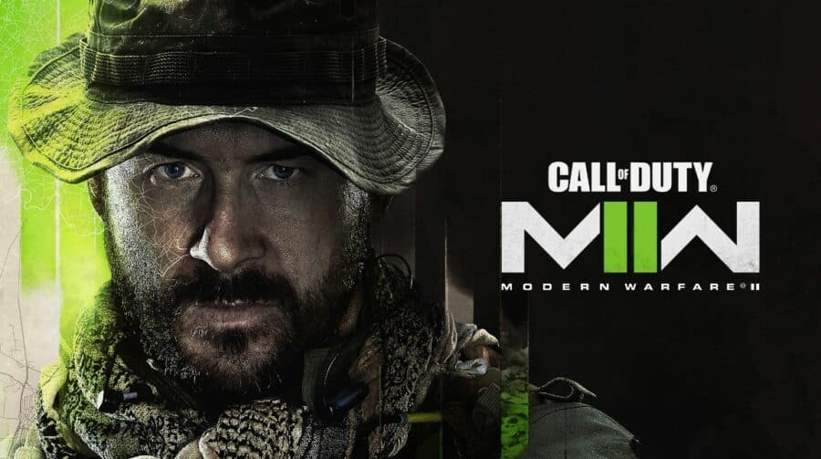
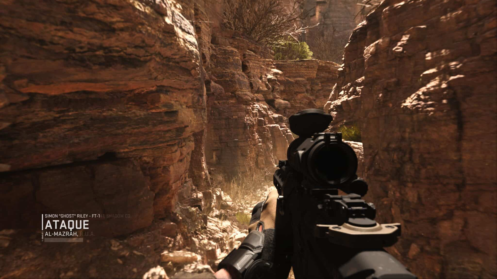
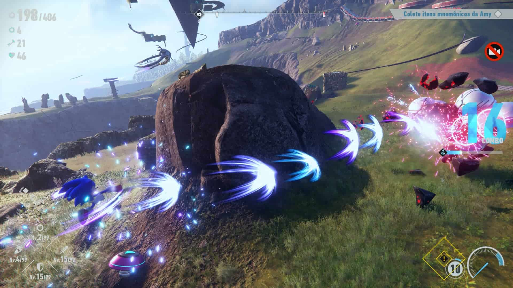
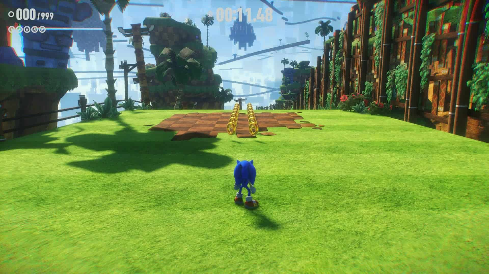

Call of Duty Modern Warfare II: vale a pena?
Uma boa campanha, multiplayer equilibrado, mas os menus tornam a experiência um pouco confusa.
É fácil olhar para cada fim de ano e pensar: “outro CoD… o mesmo jogo de sempre”. Mas, na realidade, não é bem assim. Cada jogo da série tem a impressão do seu estúdio criador. Call of Duty Modern Warfare II é mais uma prova disso.
À primeira vista, pode parecer tudo a mesma coisa, mas quando você realmente experimenta por um tempo um Call of Duty da Treyarch e depois um da Infinity Ward, sente muitas coisas diferentes, tanto em gameplay quanto em narrativa.
E desta vez temos um produto da IW, que na verdade é uma continuidade de um projeto muito bem sucedido de 2019. E este de 2022 é tão bom quanto o anterior. Se os menus e algumas escolhas de mecânicas não se destacam, o jogo compensa na hora dos tiroteios e com uma campanha que segura as pontas.
Glória aos ícones
Modern Warfare II impressiona logo nos primeiros minutos por seu gráficos super realistas no modo história. A modelagem dos personagens, seus truques de iluminação e os cenários fechados (perfeitos para uma incursão noturna) são absolutamente incríveis.
E não só no PlayStation 5. Nos demais consoles o game também destaca nestes quesitos. Talvez seja o Call of Duty mais bonito de todos os tempos.
A narrativa “joga no seguro”, e isso é muito bom, na verdade. Se em alguns jogos da série chegamos a ir até ao espaço em aventuras futuristas, desta vez a fórmula é ser mais contida. Até mesmo em escala.
A série Modern Warfare clássica se aproveitou bastante de intrigas geopolíticas entre grandes potências, envolvendo um pouco de Oriente Médio, com o pretexto de graves ameaças aos americanos.
MW II ainda conta com tudo isso, mas em uma escala muito menor e mais suavizada. Na narrativa, devemos perseguir um terrorista internacional que pode ter armas de destruição em massa pelo México e partes da Europa.
Os ambientes variam de locações mais lineares, focadas em liquidar com alvos específicos, a áreas mais abertas, propícias para perseguições alucinantes. Se você está acostumado com Call of Duty, não vai ser tão surpreendido por tantas cenas de ação, mas mesmo assim elas continuam muito bem dirigidas.
Se a criatividade não é muito bem explorada, temos o retorno de consagradas figuras como Ghost, SOAP e Capitão Price que acabam sendo os principais chamarizes para a trama. Desta vez nos aprofundamos um pouco mais no relacionamento da Força Tarefa 141 e vamos entendo o porquê deles serem tão coesos e companheiros.
Combate de fácil domínio, mas boss fights são confusas
Sonic Frontiers mescla o gameplay clássico e o coloca em um mundo aberto, no qual o ouriço azul pode encontrar inimigos dos mais variados (pequenos, médios e grandes). Aliás, um dos focos do game é o sistema de combate: a SEGA, aparentemente, quis diminuir a velocidade que se derrota os adversários, para dar golpes novos ao protagonista.
O título conta com uma árvore de habilidades: nela, o jogador gasta pontos (adquiridos ao derrotar máquinas ou fazer truques no ar), para obter skills inéditas. A principal delas é o Ciberloop, este garantido logo no início da aventura. Com isto, Sonic deixa um rastro brilhante no chão e ao completar um círculo, ele causa dano (ou até resolve quebra-cabeças e revela itens escondidos durante a exploração).
Conforme se obtém mais habilidades, o arsenal de Sonic fica mais completo. E o melhor de tudo é os combos serem de fácil execução, com combinações de botões nada complexas (L1/R1 + quadrado, R2 + quadrado/círculo/triângulo/X, etc.).
Nem tudo no sistema de combate, entretanto, são rosas. As lutas contra os chefões principais deixam a desejar, pela facilidade e pela confusão em entender o que está acontecendo. Em uma das boss fights, por exemplo, havia tantos elementos na tela que era difícil distinguir uma coisa da outra. Porém, quando o jogador supera esse obstáculo, derrotar a máquina gigantesca é tão simples quanto tomar doce de criança.
O mundo aberto de Sonic Frontiers
Em Sonic Frontiers, o jogador atravessará cinco ilhas distintas, todas recheadas de inimigos, itens, quebra-cabeças, portais e personagens. Explorar é essencial no game, pois é assim que não só se entende a história, mas também se revela o mapa e se progride.
As Ilhas Starfall possuem muitos “desafios” para serem cumpridos — que vão desde ir de ponto A ao ponto B até simplesmente correr em uma espécie de roda de exercícios para hamsters (a variedade dessas provas é bem grande). Ao completá-los, uma parte do mapa se revela, mostrando as coisas escondidas naquela área (acredite, você vai querer saber o que tem por ali).
A principal revelação proporcionada por esses “desafios” é a existência de portais. Ao entrar neles, Sonic é transportado para uma fase no estilo clássico (os designs variam de 2D para 3D), onde precisa cumprir quatro metas: terminá-la, conseguir um tempo de ranking “S”, obter todos os rings de estrela vermelhos escondidos e reunir uma quantidade ‘X’ de anéis.
Cumprir pelo menos um desses objetivos lhe proporciona uma chave — concluir todos lhe dá quatro delas, mais uma chave extra. Esses objetos servem para abrir cofres que contém Esmeraldas do Caos, estas essenciais para derrotar os chefões.
Sonic Frontiers mescla o gameplay clássico e o coloca em um mundo aberto, no qual o ouriço azul pode encontrar inimigos dos mais variados (pequenos, médios e grandes). Aliás, um dos focos do game é o sistema de combate: a SEGA, aparentemente, quis diminuir a velocidade que se derrota os adversários, para dar golpes novos ao protagonista.
O mundo aberto de Sonic Frontiers também tem os chamados “Itens Mnemônicos”, que precisam ser coletados para progredir na história. A cada mapa, Sonic achará esses itens distintos, que fazem referência às personalidades dos personagens que lá estão — ele reunirá corações para Amy, medalhas para Knuckles ou chaves inglesas para Tails.
Muitas vezes, os “Itens Mnemônicos” são encontrados em sessões de plataforma 2D/3D espalhadas pelo mapa. Basta o ouriço azul subir em um corrimão ou se jogar em um jumper para começar uma espécie de “minifase”. Ao final dela, ele obterá o prêmio em questão.
Embora os mapas de Sonic Frontiers incentivem a exploração, o grind necessário para conseguir uma quantidade ‘X’ de “Itens Mnemônicos” e, consequentemente, progredir na história pode irritar os mais impacientes. Apesar disso, a experiência é bastante divertida, ainda mais se você for um fã da saga.
Além disso, atravessar o cenário gera certa confusão, porque o design deles não te leva onde você espera chegar. Um exemplo desse fator é o terceiro mapa, um arquipélago: para ir da ilha A para a B, não há pistas ou indicativos de como atravessá-las. O jogador perde vários minutos correndo e estudando o local até, finalmente, achar para onde deve ir. Inclusive, tem a ver com um problema gráfico bem chato que falaremos a seguir.
Sonic Frontiers tem problemas técnicos
Como já mencionado, a SEGA construiu as Ilhas Starfall ao colocar elementos clássicos em uma “Zona Aberta”. Isso significa que o jogador encontrará as já mencionadas “minifases” em todo o mapa, estas sessões de plataforma (em 2D ou 3D) que servem para obter itens, alcançar locais mais altos ou atravessar ilhas.
Conforme Sonic corre pelo cenário, não é raro haver o “pop-in“, bug no qual um objeto antes inexistente simplesmente surge. Lembra quando mencionamos o problema de atravessar o arquipélago do terceiro mapa? Por muitas vezes, o player não conseguirá observar essas sessões de plataforma ao longe. Ele precisa se movimentar, chegar perto e “tcharam!”: um corrimão aparece bem diante dele.
As falhas gráficas não param por aí. Em cutscenes e no gameplay, é possível ver pequenos pontinhos pretos na paisagem em determinados momentos — tirando a beleza do cenário. O lado positivo é justamente o estilo de arte adotado para o jogo, com as arquiteturas das construções antigas em destaque.
Outro problema que deve irritar quem joga no PlayStation 5 é a grande quantidade de telas de loading no título — embora sejam rápidas. Em contrapartida, enquanto o jogo carrega, o player consegue treinar as habilidades de Sonic em pequenos tutoriais.
Sonic Frontiers: vale a pena?
Sonic Frontiers é, certamente, uma proposta bastante diferente em relação à saga completa. Embora reúna diversos elementos clássicos — fases de plataforma em 2D e 3D, coleta de anéis e velocidade — também traz um sistema de combate novo e uma história mais madura. É impossível dizer que a SEGA não tentou reinventar a franquia, com este produto.
É verdade que ainda faltou um capricho a mais em elementos importantes do título. As boss fights são chatas e o polimento está abaixo do esperado. Por outro lado, a experiência é divertida e, pela primeira vez na história, conta com legendas em PT-BR.
Totalmente single-player, Sonic Frontiers tem uma campanha que dura cerca de 15h e ocupa apenas 23 GB do SSD. Se você for um fã, certamente vale a pena. Se não for este o caso, o melhor é esperar uma promoção (e correções).
Fonte:MeuPlastation